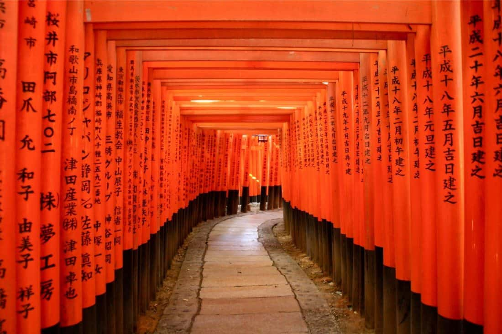
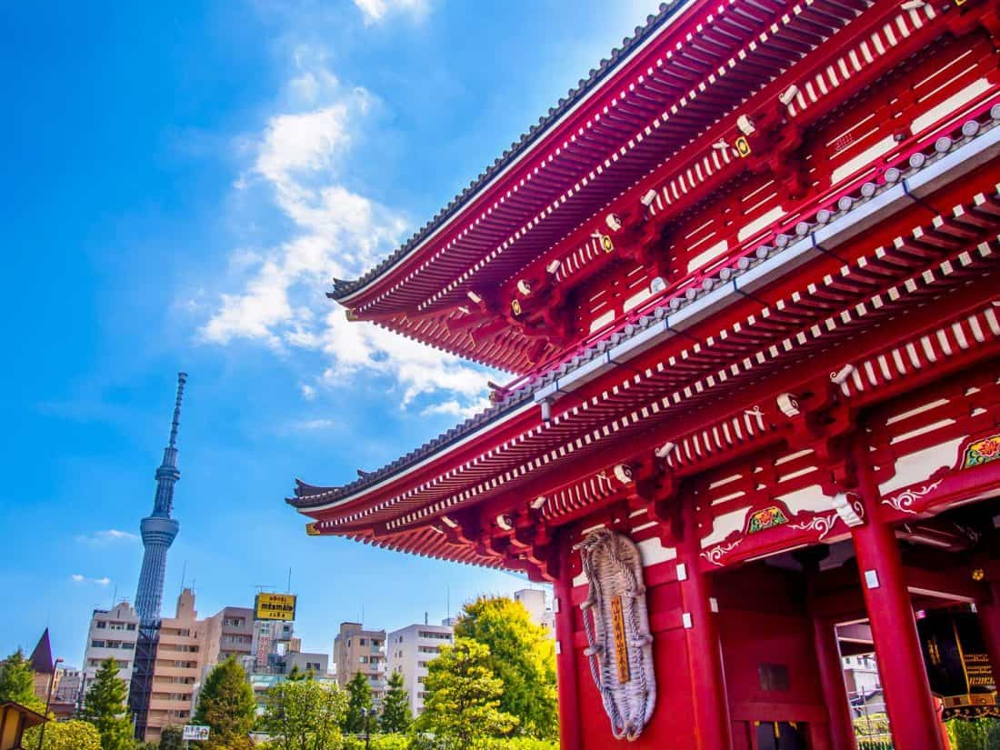
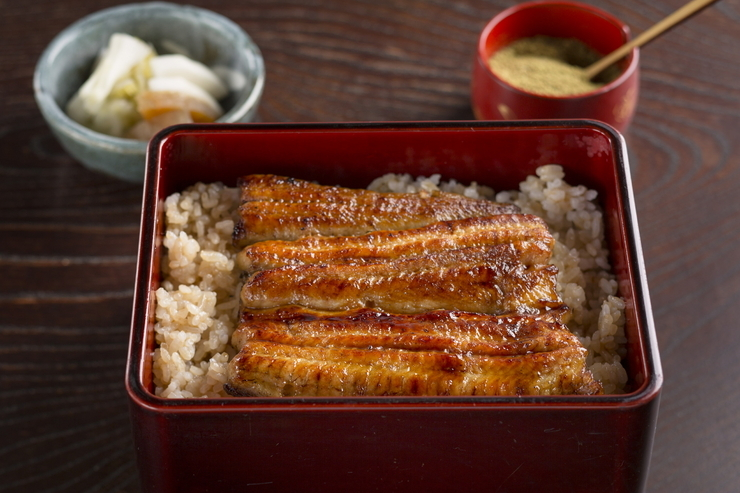
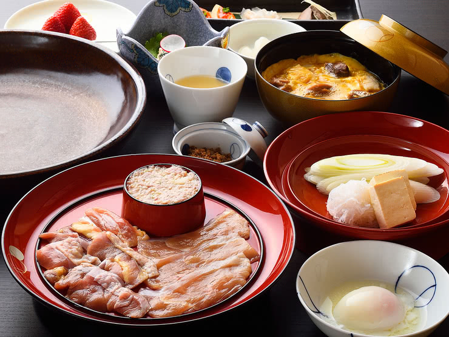

Kyoto

If you only have time for one Japan destination, make it Kyoto.
This is traditional Japan as you imagined it—geisha in brightly coloured kimonos emerging from wooden teahouses, forests of bamboo, temples and shrines in gold and silver and scarlet, raked gravel Zen gardens, intricate feasts served on lacquered plates, graceful tea ceremonies, and markets full of intriguing but unidentifiable ingredients.
The concrete high-rises of downtown Kyoto can be disappointing, so head out towards the mountains to the surrounding neighbourhoods where you’ll find narrow stone streets, old wooden houses, monks in flowing robes, and the sounds of chanting and gongs from the many temples and shrines.
Tokyo

If Kyoto is the heart of traditional Japan, Tokyo is its ultramodern counterpart.
It’s here you’ll find the skyscrapers, noisy arcades, busy pedestrian crossings, quirky youth fashions, and many many incredibly delicious restaurants.
If all you do in Tokyo is eat, you’ll have an amazing time—even as vegetarians we ate so well.
Tokyo is also home to some of the weirdest activities we’ve ever done. From themed cafes (cats, owls, maids, robots, goats—you name it, Tokyo has it) to sensory-overload shows and arcades to cos-play go-karting.
On my first trip to Tokyo I was overwhelmed by the sprawling city and couldn’t help comparing it unfavourably to Kyoto.
On repeat visits I’ve grown to love the city (the food certainly helped) and while it isn’t as attractive as Kyoto, there is so much to do that you won’t want to skip it.
Hashimoto

With a history of around 180 years, this famous eel restaurant places importance on where their ingredients come from. As a result, they use premium ingredients from all over Japan that has been produced in the best environments. Compared to other restaurants, they use larger eels and grill them until they're fluffy and soft. Their special sauce that has been continuously added to over many years has a traditional taste and enhances the umami (Japanese savory taste) of eel. It is a deep flavor that goes perfectly with aromatic eel grilled over binchotan (a type of high-quality charcoal). Do try their [Unaju Special] - a dish of eel dipped in sauce and grilled before being served on top of rice in a lacquer box. There’s also the [Grilled Eel Offal], which is a dish of eel offal grilled with sauce. The mellow aroma and bitterness of this dish go well with alcohol.
Tamahide

This restaurant specializes in dishes made with shamo (game fowl). Established in 1760, the restaurant’s most famous dish is their [Tori Suki] - a sukiyaki (hot pot stew) made with shamo. They don’t use any sake (Japanese alcohol) or sugar in their sauce, preferring instead to create a rich and fragrant sauce using shoyu (soy sauce). A variety of chicken parts can be simmered in this special sauce and eaten. They are also known as the birthplace of oyako-don (rice bowl dish with chicken and eggs), which is now a Japanese specialty. Dishes with chicken and egg on top of rice had existed before the birth of oyako-don, but it was this restaurant that created the version in which chicken is cooked in the sauce used for [Tori Suki], with an egg added afterwards. The [White Liver Oyako-don] is a version of this dish that comes with a rare kind of chicken liver. The mellow taste and softness of the liver is a great match with the golden yellow eggs.